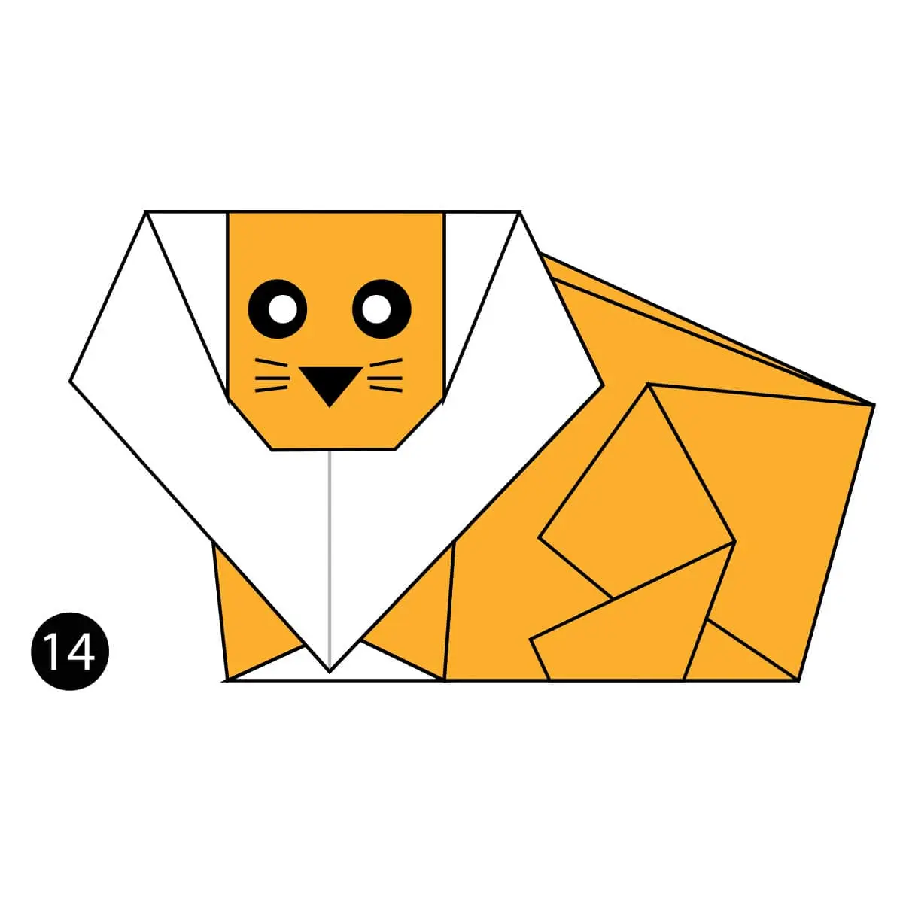
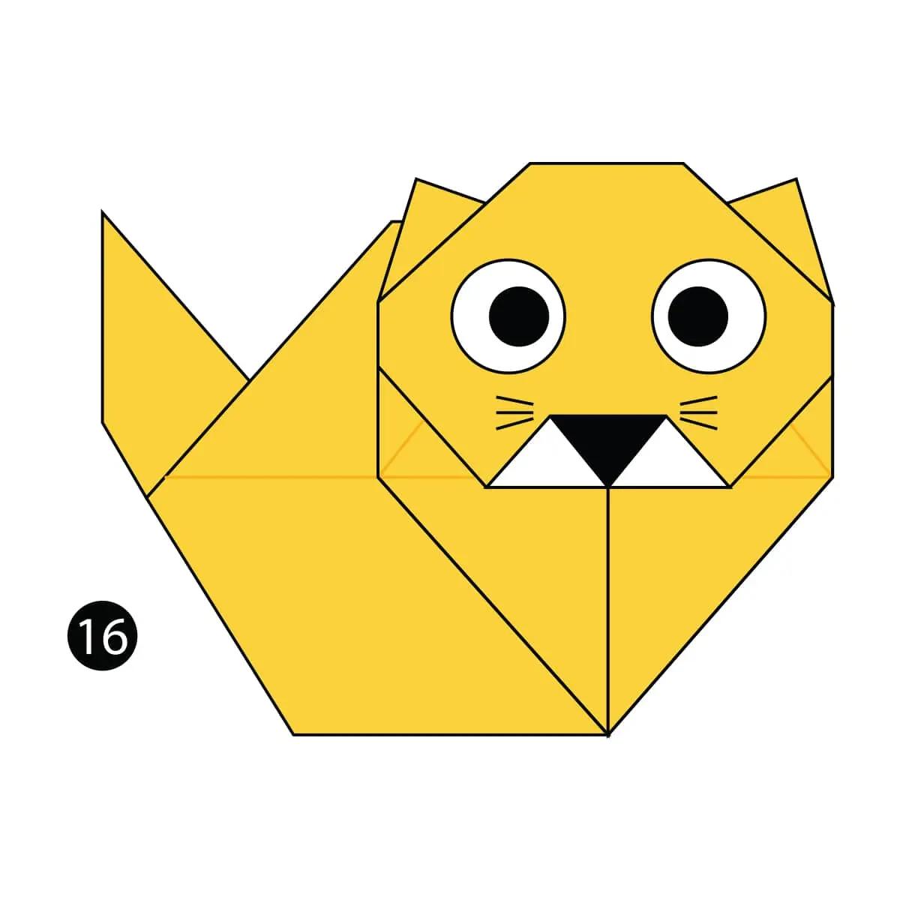

"
Origami Instructions And Diagrams
Step by Step diagrams are probably the most popular and easiest to follow way to show how to fold things out of paper.
Trying to find good origami instruction on the Internet can be a lot of work through. To help your search we've put
together the largest database of free origami diagrams anywhere on the Internet.

Camel
- Camel ear's are furry.
- Camel can move easily across the sand because of its specially designed feet.
- When they find water, they will drink as much as possible.

Chameleon
- Chameleons are reptiles that are part of the iguana suborder.
- Changing skin color is an important part of communications among chameleons.
- Most chameleons have a prehensile tail that they use to wrap around tree branches.

Pigeon
- Pigeons are highly sociable animals. They will often be seen in flocks of 20-30 birds.
- Pigeons mate for life, and tend to raise two chicks at the same time.
- Pigeons can fly at altitudes up to and beyond 6000 feet, and at an average speed of 77.6 mph. The fastest recorded speed is 92.5 mph.

Lion
- Lions are the only big cats to live in groups, called prides.
- Lions work together to defend territory and hunt.
- They spend between 16 and 20 hours each day resting and sleeping.

Teddy Bear
- Teddy bears have soft plush with movable arms and legs and a friendly face.
- The world's smallest stitched teddy bear is a mere 0.29 inches tall! It was created by South African artist Cheryl Moss who is known for her minuscule work.

Cat
- Cats enjoy acute hearing and can detect an extremely broad range of frequencies.
- They are particularly effective hunters at night, when their light-reflecting eyes allow them to see much better than their prey.
- Cats have a mobile backbone that allows them to rotate the front half of the spine through an angle of 180 degrees in relation to their back half.

Panda
- Like domestic cats, giant pandas have vertical slits for pupils.
- Mother pandas keep contact with their cub nearly 100% of the time during their first month - with the cub resting on her front and remaining covered by her paw, arm or head.
- At 5 months old, giant pandas learn how to climb - sometimes practicing by climbing on their mum. .

Flying Cicada
- Cicadas can survive a huge fall as babies, or nymphs. They are about the size of a grain of rice when they drop from a tree branch to the ground and start digging.
- Most have red-orange eyes. But occasionally cicadas have blue, white or grayish eyes. Keep on the lookout.